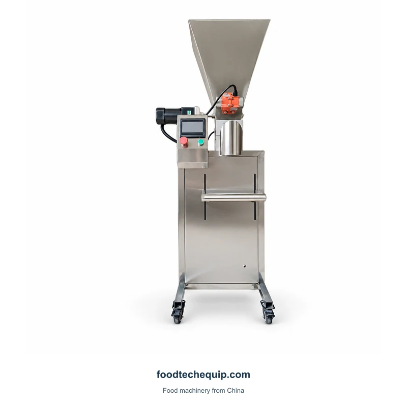
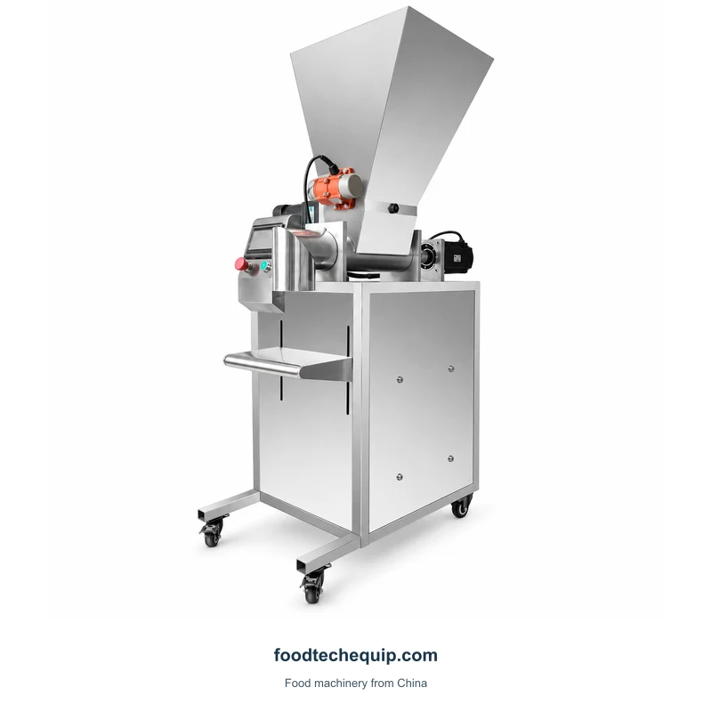

Equipamentos de dosagem
Máquina dosadora de pó sem-fim
Uma máquina dosadora de pó sem-fim com funil cônico, seção de descarga e gabinete de controle.
Ver equipamento
Selecione a imagem para visualizá-la em tamanho maior.
Equipamento de dosagem de pó com funil de alimentação superior, controles frontais e seção de descarga montada em gabinete.
Seleção de equipamentos · Orientação de instalação · Suporte remoto
Explore informações do produto ↓Explique se o pó flui livremente ou tende a formar pontes e como cada dose será coletada. Inclua o peso alvo e o método de pesagem utilizado para avaliar a dose final.
Definir uma aplicação de enchimento ou dosagem ↗| Parâmetro | Valor | Unidade |
|---|---|---|
| Velocidade de embalagem | 60-120 | embalagens/min |
Uma dose medida ainda precisa de um recipiente ou bolsa receptora. Identifique se o seu próximo passo é encher um recipiente, formar um sachê ou fechar um saco cheio e mostre como a porção chega até essa etapa.
Uma máquina dosadora de pó sem-fim com funil cônico, seção de descarga e gabinete de controle.
Ver equipamento
Um sistema de dosagem de pó por trado horizontal com um conjunto de descarga suportado.
Ver equipamento
Dosador de grânulos de canal duplo com alimentação por funil e seção de descarga suportada.
Ver equipamento